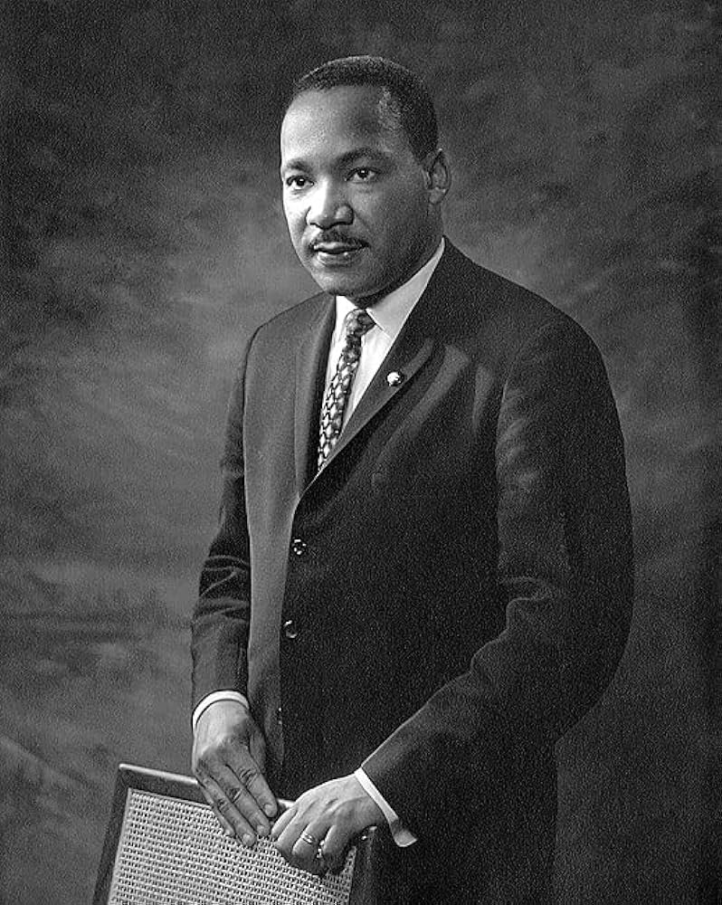

Né le 15 janvier 1929 à Atlanta et mort à Memphis le 4 Avril 1968, assassiné par un supremaciste blanc, Mathin Luther King a marqué l'histoire par son engagement contre le racisme et pour l'égalité. Son célèbre discours << j'ai fait un rêve >> du 28 Août 1963, en faveur d'un pays ou regneraient justice et paix pour tous les êtres humains quelle que soit la couleur de peau, a traversé le temps et continue d'inspirer au-delà des frontières étasuniennes.